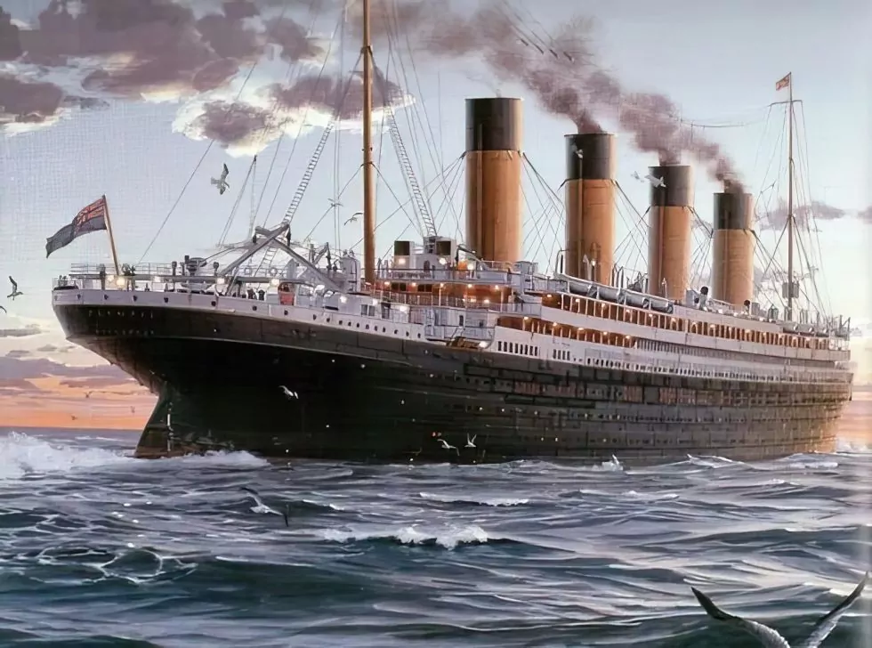

Titanic Survival Analysis Project
This data science project explores the famous Titanic dataset to uncover patterns and insights into passenger survival during the tragic 1912 sinking. Using R programming and advanced visualization libraries, the analysis examines key demographic and socioeconomic factors influencing survival rates. The project demonstrates exploratory data analysis (EDA) techniques, statistical summaries, and data visualization to draw meaningful conclusions about the event.

Project Overview
Objective: Analyze the Titanic passenger data to identify factors affecting survival, such as gender, age, class, family size, fare, and embarkation port. The goal is to provide a comprehensive understanding of who survived and why, based on historical data.
Dataset: The analysis uses the titanic_train.Rdata file, containing 668 passenger records with variables like Survived (0/1), Pclass (1st/2nd/3rd class), Sex, Age, SibSp (siblings/spouses), Parch (parents/children), Fare, Cabin, Embarked (C/Q/S for ports), and Ticket.
Tools and Libraries
- R Programming Language: For data manipulation, statistical analysis, and scripting.
- ggplot2: Core visualization library for creating bar charts, histograms, boxplots, density plots, and scatterplots.
- viridis: For color scales in density plots.
- ggridges: For ridge plots showing distributions across categories.
- ggExtra: For marginal plots (e.g., histograms on scatterplots).
- gridExtra: For arranging multiple plots and tables.
Methodology
The script performs univariate and bivariate analyses, generates frequency tables, proportions, and visualizations. It includes data cleaning (e.g., handling missing values implicitly), feature engineering (e.g., age intervals, total relatives), and saves key tables as PNG images for reporting.
Key Analyses and Results
Survival Overview
Result: Out of 668 passengers, 412 did not survive (61.7%), while 256 survived (38.3%). Survival rates were heavily skewed by gender: 74.7% of females survived compared to only 20.6% of males.
Visualization: Bar chart showing survival by sex, with counts labeled.
Table: Cross-tabulation of survival by sex, including totals.
Demographic Breakdown
- Sex: 63.6% male, 36.4% female – a male-dominated passenger list.
- Passenger Class (Pclass): 42% in 1st class, 67% in 2nd, 75% in 3rd (note: percentages seem misaligned in script; actual counts: 1st=132, 2nd=134, 3rd=402).
- Age: Most passengers (mode around 24-30) were adults aged 18-37. Distribution: Young people (0-18): ~20%, Young adults (18-30): ~40%, Adults (30-50): ~30%, Old (>50): ~10%.
- Family Variables (SibSp & Parch): Right-skewed distributions; 66% had no siblings/spouses, 75% had no parents/children. Indicates most traveled alone or in small groups.
- Fare: Highly skewed; median ~$14, but some paid over $200. Most fares were low, reflecting 3rd-class dominance.
- Embarkation Port: Southampton (71.6%), Cherbourg (19.8%), Queenstown (8.5%). Southampton was the primary boarding point.
Bivariate and Advanced Visualizations
- Survival by Sex (Graph 1): Reinforces gender disparity; women prioritized in lifeboats.
- Fare by Age Intervals (Graph 2): Ridge density plot showing fare distributions across age groups (e.g., [20-30) had varied fares). Uses viridis color scale for fare values.
- Family Relationships (Graph 3): Bin2D plot of Parch vs. SibSp; most clusters at low values (0-2 relatives), showing independence between variables.
- Fare by Sex (Graph 4): Boxplots reveal similar medians (~$10-15) but outliers for both; men: mean $25.5, women: $44.5 (higher due to 1st-class preferences).
- Class by Embarkation (Graph 5): Bar chart with dodge; 1st class mostly from Cherbourg/Southampton, 3rd from Southampton/Queenstown. Table shows breakdowns.
- Age Distribution by Sex (Graph 6): Mirrored density plots with mean/median lines; men: mean 30.7, median 29; women: mean 27.9, median 27. Slight male skew toward older ages.
- Age vs. Total Relatives (Graph 7): Scatterplot with marginal histograms; no strong correlation, but younger passengers had more relatives. Colored by sex.
Conclusions
Survival Factors: Gender was the strongest predictor – women had ~3.5x higher survival rates. Class mattered (1st class: 63% survival vs. 3rd: 24%), but gender trumped it. Age showed mixed effects; children had higher survival, but adults dominated.
Demographic Insights: The Titanic carried a young, male-heavy, lower-class majority. Family sizes were small, fares low, and Southampton was the hub.
Patterns and Anomalies: No clear link between fare/age or family size/age, but class and port correlated (wealthier passengers boarded at premium ports). Distributions were skewed, highlighting socioeconomic divides.
Implications: Reinforces historical narratives of "women and children first." Useful for machine learning models (e.g., predicting survival) or historical studies.
Limitations: Based on training data only; missing values in Age/Cabin not addressed. Visualizations use deprecated ggplot2 syntax (e.g., ..count..), suggesting updates for modern R versions.
This project showcases R's power for EDA, producing 7+ visualizations and tables. The code is reproducible, with outputs saved as PDFs/PNGs. For the full script or datasets, visit the repository. If you'd like to extend this with predictive modeling (e.g., logistic regression), let me know!